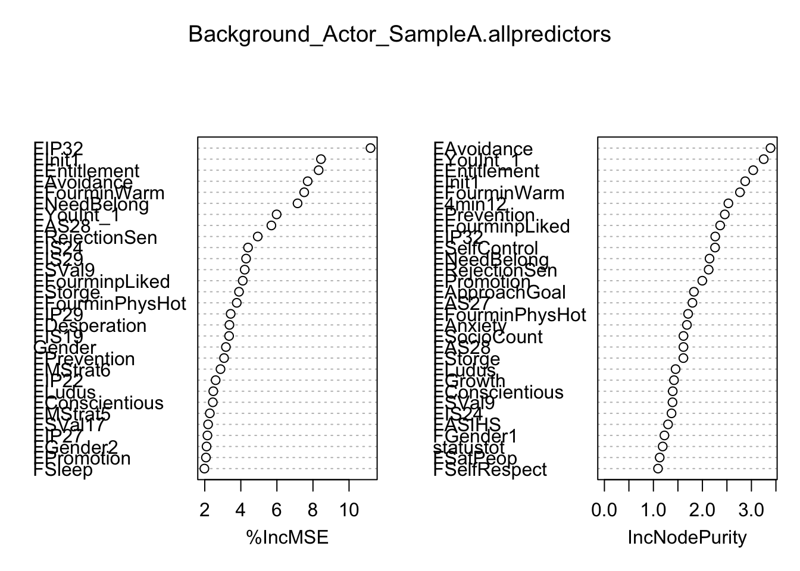
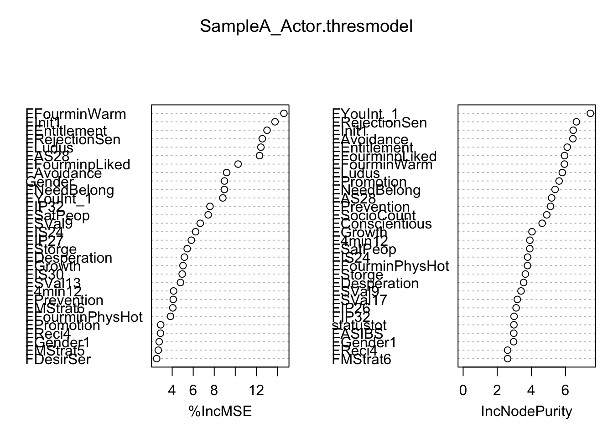
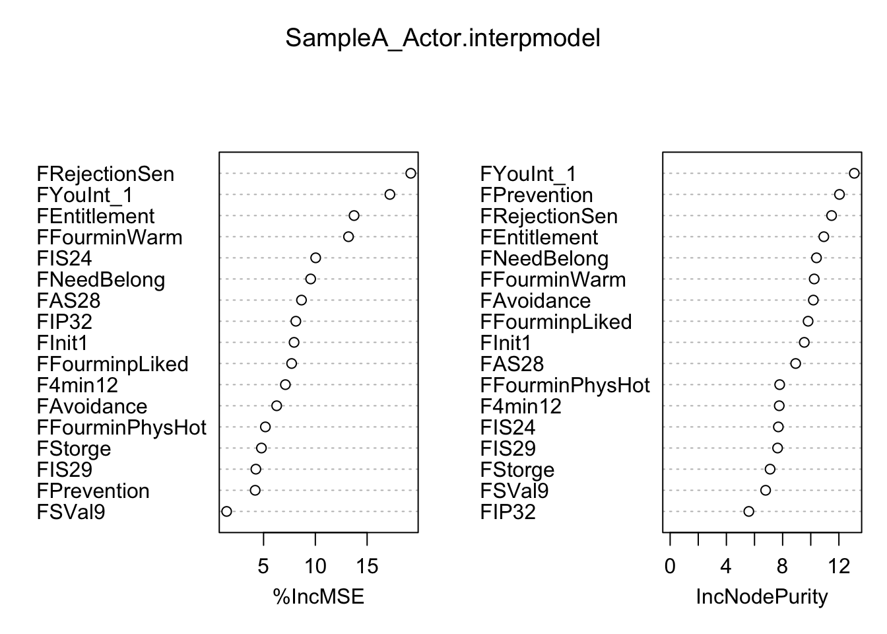
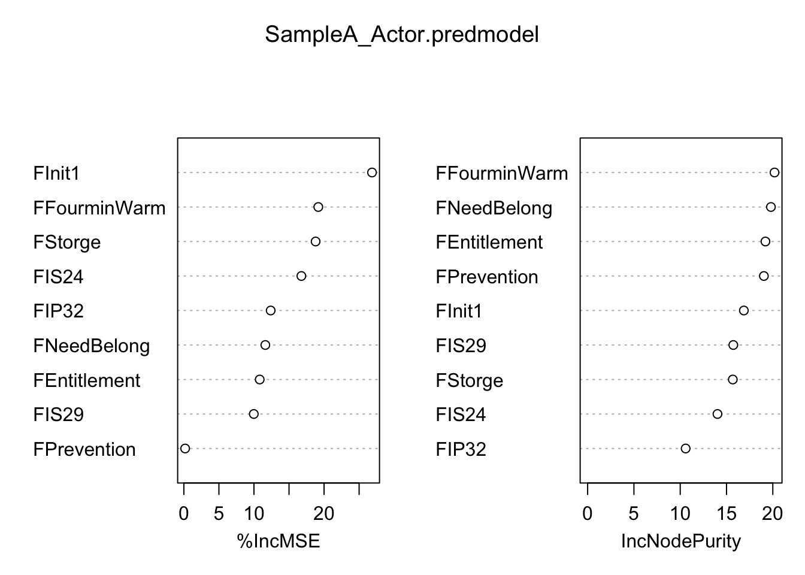
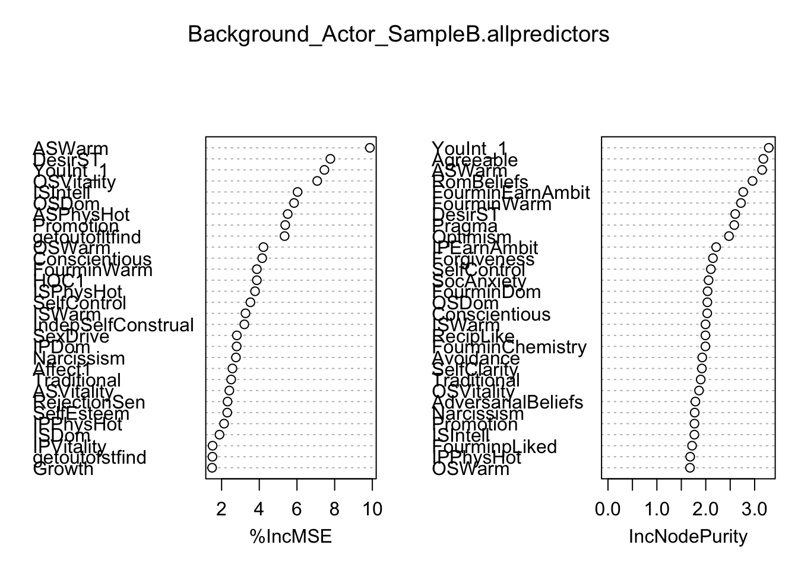
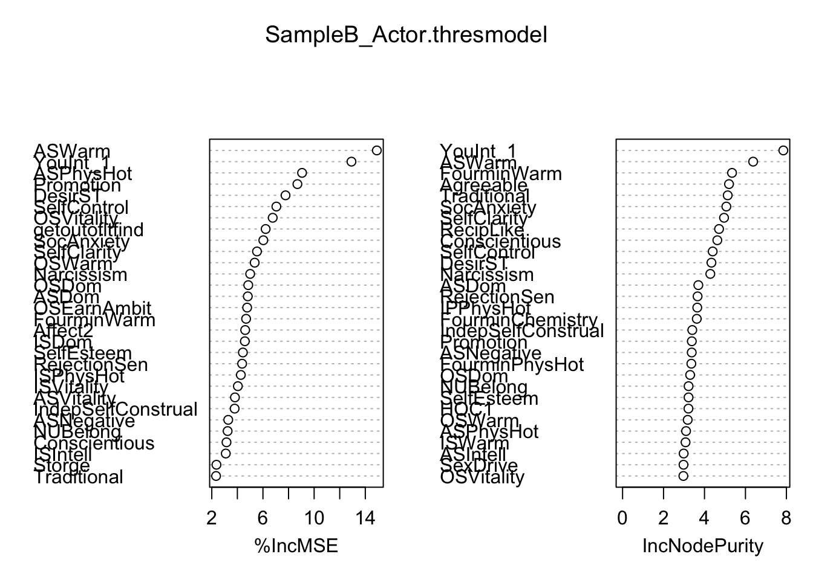
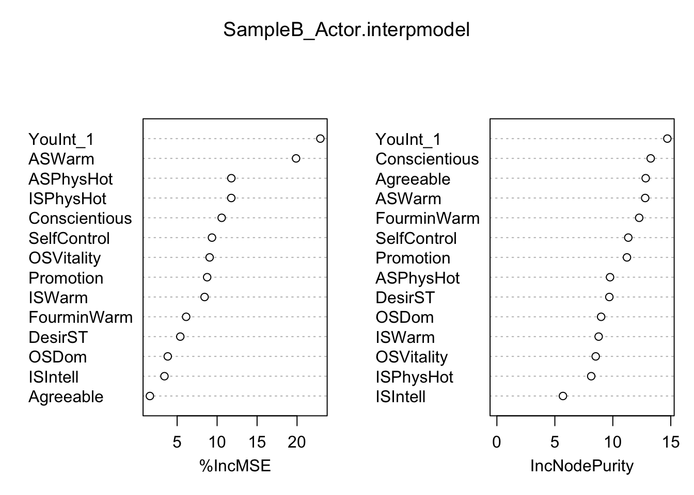
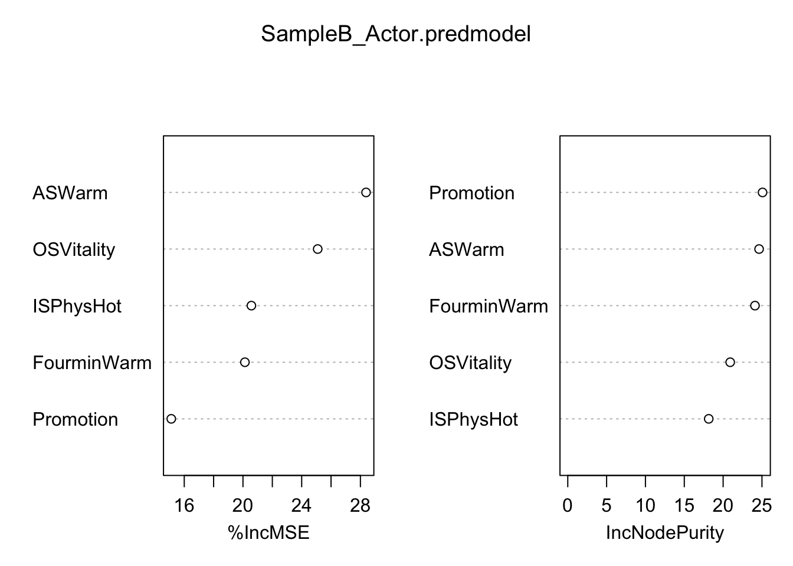

#Install Required Packages
library(tree); library(randomForest)randomForest 4.7-1.2Type rfNews() to see new features/changes/bug fixes.library(VSURF)
#####Actor Analyses#####
############## SAMPLE A########################
Background_Actor_SampleA <- read.csv(file="Level 2 predicting ActorGM, Sample A.csv", header=T)
set.seed(605)
SampleA_Actor_VSURF <- VSURF(DiggingActorGM~., data=Background_Actor_SampleA, na.action=na.omit, ntree=5000)Thresholding step
Estimated computational time (on one core): 18.5 sec.
|
| | 0%
|
|==== | 5%
|
|======= | 10%
|
|========== | 15%
|
|============== | 20%
|
|================== | 25%
|
|===================== | 30%
|
|======================== | 35%
|
|============================ | 40%
|
|================================ | 45%
|
|=================================== | 50%
|
|====================================== | 55%
|
|========================================== | 60%
|
|============================================== | 65%
|
|================================================= | 70%
|
|==================================================== | 75%
|
|======================================================== | 80%
|
|============================================================ | 85%
|
|=============================================================== | 90%
|
|================================================================== | 95%
|
|======================================================================| 100%
Interpretation step (on 23 variables)
Estimated computational time (on one core): between 0.5 sec. and 5.8 sec.
|
| | 0%
|
|=== | 4%
|
|====== | 9%
|
|========= | 13%
|
|============ | 17%
|
|=============== | 22%
|
|================== | 26%
|
|===================== | 30%
|
|======================== | 35%
|
|=========================== | 39%
|
|============================== | 43%
|
|================================= | 48%
|
|===================================== | 52%
|
|======================================== | 57%
|
|=========================================== | 61%
|
|============================================== | 65%
|
|================================================= | 70%
|
|==================================================== | 74%
|
|======================================================= | 78%
|
|========================================================== | 83%
|
|============================================================= | 87%
|
|================================================================ | 91%
|
|=================================================================== | 96%
|
|======================================================================| 100%
Prediction step (on 16 variables)
Maximum estimated computational time (on one core): 3.2 sec.
|
| | 0%
|
|==== | 6%
|
|========= | 12%
|
|============= | 19%
|
|================== | 25%
|
|====================== | 31%
|
|========================== | 38%
|
|=============================== | 44%
|
|=================================== | 50%
|
|======================================= | 56%
|
|============================================ | 62%
|
|================================================ | 69%
|
|==================================================== | 75%
|
|========================================================= | 81%
|
|============================================================= | 88%
|
|================================================================== | 94%
|
|======================================================================| 100%Warning in VSURF.formula(DiggingActorGM ~ ., data = Background_Actor_SampleA, : VSURF with a formula-type call outputs selected variables
which are indices of the input matrix based on the formula:
you may reorder these to get indices of the original datasummary(SampleA_Actor_VSURF)
VSURF computation time: 24.4 secs
VSURF selected:
23 variables at thresholding step (in 19.5 secs)
16 variables at interpretation step (in 3.5 secs)
8 variables at prediction step (in 1.4 secs)SampleA_Actor_VSURF$varselect.thres [1] 179 80 29 69 3 20 34 73 180 141 116 78 41 96 66 154 17 149 91
[20] 40 88 159 181SampleA_Actor_VSURF$varselect.interp [1] 179 80 29 69 3 20 34 73 180 141 116 78 41 96 66 154SampleA_Actor_VSURF$varselect.pred[1] 179 80 29 69 20 96 66 154#Sample A actor model, no variable selection
set.seed(59)
Background_Actor_SampleA.allpredictors <- randomForest(DiggingActorGM~., data=Background_Actor_SampleA, importance=T, na.action=na.omit, ntree=5000)
Background_Actor_SampleA.allpredictors
Call:
randomForest(formula = DiggingActorGM ~ ., data = Background_Actor_SampleA, importance = T, ntree = 5000, na.action = na.omit)
Type of random forest: regression
Number of trees: 5000
No. of variables tried at each split: 60
Mean of squared residuals: 0.9651592
% Var explained: 0.61importance(Background_Actor_SampleA.allpredictors) %IncMSE IncNodePurity
Gender 3.172897925 0.1780534
FAnxiety 1.500063035 1.6840891
FAvoidance 7.706011115 3.3892831
FSocioCount 1.630210046 1.6133255
FSocioScale 0.114127221 0.8355868
FMateValue -0.590629515 0.7629683
FASIBS 1.924285719 0.9288447
FASIHS 1.066400277 1.2987941
FLim -1.775960911 0.7597938
FTraditional -0.868308401 0.9302376
FSexDrive 0.397133606 0.6063591
FConservatism -3.666262713 0.6996684
FPartnerConserv 0.834181181 0.6800714
FRecipLike -2.409907639 0.6614795
FDesperation 3.368100506 0.8633221
FDestiny -3.171453554 0.6271553
FGrowth 1.273011846 1.4203368
FSelfClarity -1.997299132 0.5672420
FIdealSelfClarity -1.595060378 0.5036255
FNeedBelong 7.145425428 2.1453401
FApproachGoal -0.800277262 1.8269660
FAvoidGoal -0.167332638 0.7186161
FForgiveness 0.093705467 0.8107645
FLonely 1.032119492 1.0828926
FSelfEsteem 0.700420583 0.5717883
FSelfControl 1.026326177 2.2576978
FSWBTot -0.768728622 0.7592727
FSelfRespect -0.581792373 1.0941111
FEntitlement 8.314371896 3.0364589
FRelatSelfConstrual -0.927715804 0.8417996
FIndepSelfConstrual -1.745514212 0.4620879
FRISC -0.515092663 0.7683466
FCISC -2.567675097 0.7755171
FRejectionSen 4.937713225 2.1273311
FIDSTot 1.088284776 0.7497215
FWITot 0.566919143 0.8621048
FISWTot -1.918589011 0.4391449
FComTot 0.906639444 0.6867067
FNarcissism -3.020299373 0.9331593
FPromotion 2.065767567 1.9973265
FPrevention 3.070868334 2.4566120
FEmoExpression -2.256546087 0.5540232
FLocomotion 0.627712270 0.6026363
FAssessment -4.143892834 0.8390315
FCapitalization -0.851336538 0.7127612
FExtraversion -2.384932483 0.8547469
FAgreeable -4.806511039 0.6223306
FConscientious 2.446226062 1.3939464
FNeurotic -1.257297517 0.5104407
FOpenness -0.020855244 0.4089866
FASPhysHot 0.723316250 0.6222083
FASEarnAmbit -0.006026322 0.8420017
FASVitality -0.439426087 0.9983487
FASWarm 0.217368382 0.9516313
FASDom -2.527222299 0.6930017
FISPhysHot -1.600176053 0.4399458
FISEarnAmbit -2.760789867 1.0205730
FISVitality -1.003536380 0.2675537
FISWarm 1.114043805 0.6378132
FISDom -1.220942905 0.3346952
FIPPhysHot 0.010300379 0.6651989
FIPEarnAmbit -1.016432987 0.4663303
FIPVitality -0.588303510 0.2720361
FIPWarm 1.581844105 0.4761746
FIPDom -0.608132640 0.7141374
FFourminPhysHot 3.773991656 1.7081070
FFourminEarnAmbit -0.572133548 0.6150841
FFourminVitality -0.735436379 0.3943258
FFourminWarm 7.513514323 2.7660905
FFourminDom -0.699913655 0.4885488
FFourminLiked 1.470551733 0.5266025
FFourminChemistry -1.072172363 0.8485748
FFourminpLiked 4.106523020 2.3618223
FDesirSer 1.966373437 0.6258459
FDesirCas 0.179999758 0.3752409
FDesirOne 1.422940453 0.3540505
FSatPeop 0.865547502 1.1283309
FYouInt_1 5.985499484 3.2508558
FThemInt_1 -3.659441335 0.8423688
FInit1 8.442648512 2.8728239
FInit2 -1.740851834 0.4577144
FInit3 -0.899505027 0.5686809
FMStrat1 -1.000896660 0.9547329
FMStrat2 0.833951640 0.3197264
FMStrat3 -0.932441583 0.3719527
FMStrat4 -1.643401400 0.4306412
FMStrat5 2.281368792 0.4246070
FMStrat6 2.873418940 0.9879554
FMStrat7 1.971310352 0.4866676
FMStrat8 -1.708114214 0.4274156
FGender1 0.303023146 1.2250872
FGender2 2.100191288 0.7496708
FSexOr -0.854586901 0.1531126
FPragma -1.749960617 0.9479327
FLudus 2.472998797 1.4523524
FStorge 3.898943521 1.6114194
FMyStatus -1.226081913 0.5042988
FReci3 0.505159132 0.2458185
FReci4 0.680715415 1.0923144
FHealth -0.965196999 0.5231044
FSleep 1.980895713 0.5902638
FPA1 -0.944318438 0.4286015
FPA2 -0.958245197 0.2953651
FPA3 0.162871829 0.4003554
FNA1 -2.003564672 0.4509916
FNA2 -1.123257781 0.6200681
FNA3 -1.084382675 0.3742192
FSVal1 -2.823407306 0.2686503
FSVal2 -1.466014698 0.1814735
FSVal3 -0.369853065 0.3398384
FSVal4 0.205537956 0.5834225
FSVal5 -0.306429114 0.3039212
FSVal6 -0.337282235 0.3152146
FSVal7 0.644573043 0.3780469
FSVal8 -2.120422274 0.4555336
FSVal9 4.215545562 1.3897711
FSVal10 -0.120901515 0.3132569
FSVal11 -1.858183177 0.6806883
FSVal12 0.661654965 0.6082744
FSVal13 1.532851333 0.6834985
FSVal14 -1.397982552 0.4128541
FSVal15 -1.662318630 0.2074149
FSVal16 -2.307670182 0.3794389
FSVal17 2.185376295 0.7205346
FAS12 -0.390781712 0.2758245
FAS13 -0.836456072 0.9920394
FAS14 -2.919635662 0.5947353
FAS15 -1.529858713 0.4338052
FAS16 -0.758554092 0.4041606
FAS17 0.986501896 0.4228130
FAS18 0.538533729 0.4118152
FAS19 -0.602190153 0.5169555
FAS20 0.351001153 0.4827517
FAS21 1.162036864 0.6050446
FAS22 -0.361977322 0.5955148
FAS23 -1.517390245 0.6065768
FAS24 -2.642794003 0.5428192
FAS25 -1.526126293 0.3108525
FAS26 0.130269181 0.7108465
FAS27 -2.168377304 1.7963281
FAS28 5.694255219 1.6130472
FAS29 1.855396997 0.4149060
FAS30 1.118571019 0.3918551
FAS31 -0.363973810 0.3613706
FAS32 0.155287642 0.5545314
FIS12 0.512434529 0.1905248
FIS17 -0.316320344 0.2512092
FIS18 -2.286375759 0.3218403
FIS19 3.348695826 0.5663859
FIS20 -1.493123379 0.2811068
FIS21 0.190961912 0.3355860
FIS22 -2.482455257 0.2305724
FIS23 0.305238955 0.4314232
FIS24 4.399027564 1.3697716
FIS25 -2.330907119 0.3222670
FIS26 -0.146963804 0.3706616
FIS27 0.071214760 0.3711210
FIS28 -0.520228139 0.2838680
FIS29 4.292060469 0.9525052
FIS30 1.870781380 0.5090664
FIS31 -0.562328229 0.2132747
FIS32 0.559722208 0.3891501
IP12 -0.713636551 0.6076097
FIP17 -2.237397203 0.4245028
FIP18 -0.552690019 0.1871351
FIP19 1.853928158 0.3730528
FIP20 -0.432505404 0.2813919
FIP21 1.432087870 0.3070170
FIP22 2.603935651 0.6164091
FIP23 -0.050431682 0.3241795
FIP24 -1.338273847 0.2478823
FIP25 -2.029069495 0.2159458
FIP26 1.443012359 0.9270380
FIP27 2.147890774 0.4820350
FIP28 -1.110584071 1.0285655
FIP29 3.436236142 0.6942301
FIP30 -0.168965157 0.1732001
FIP31 -0.489067015 0.2408865
FIP32 11.189253923 2.2616590
F4min12 1.946372824 2.5298413
statustot 0.896964993 1.1892309
attracttot -0.726333658 0.7281483varImpPlot(Background_Actor_SampleA.allpredictors)
#Sample A actor model, threshold variables
SampleA_ActorGM.thresdata <- Background_Actor_SampleA[c(179,29,80,69,3,20,34,116,78,141,73,180,154,41,96,66,159,17,95,149,88,48,40,176,99,120,7,173,1,169,181,91,15,87,160,4,124,77,151,174,74,183)]
set.seed(605)
SampleA_Actor.thresmodel <- randomForest(DiggingActorGM~., data=SampleA_ActorGM.thresdata, importance=T, na.action=na.omit, ntree=5000)
SampleA_Actor.thresmodel
Call:
randomForest(formula = DiggingActorGM ~ ., data = SampleA_ActorGM.thresdata, importance = T, ntree = 5000, na.action = na.omit)
Type of random forest: regression
Number of trees: 5000
No. of variables tried at each split: 13
Mean of squared residuals: 0.829735
% Var explained: 18.39importance(SampleA_Actor.thresmodel) %IncMSE IncNodePurity
FIP32 7.5950970 2.987150
FEntitlement 13.0210230 6.103267
FInit1 13.7806006 6.452461
FFourminWarm 14.6245882 5.939883
FAvoidance 9.1781137 6.434495
FNeedBelong 8.9626115 5.390567
FRejectionSen 12.5707728 6.642211
FSVal9 6.6694836 3.394185
FYouInt_1 8.8165290 7.461334
FAS28 12.3089086 5.188117
FFourminpLiked 10.2697162 5.947987
F4min12 4.1362964 3.912146
FIS24 6.2308735 3.779140
FPrevention 4.1018338 5.123030
FStorge 5.4302353 3.649268
FFourminPhysHot 3.8407172 3.774254
FIS29 0.6622327 2.536128
FGrowth 5.0285965 4.037392
FLudus 12.4367108 5.814488
FIS19 -0.2082114 1.890681
FMStrat6 4.0594072 2.607675
FConscientious 1.6722218 4.632650
FPromotion 2.9071350 5.626654
FIP29 1.9651719 2.412697
FReci4 2.8898886 2.608378
FSVal13 4.7909328 2.129361
FASIBS -0.6506838 2.968841
FIP26 0.3735795 3.106993
Gender 8.9710861 1.005956
FIP22 0.4322448 1.891587
statustot 1.3707676 2.977283
FGender1 2.7632993 2.957209
FDesperation 5.1650234 3.547418
FMStrat5 2.6777414 1.643734
FIS30 4.9533384 1.573643
FSocioCount 0.7784150 4.903573
FSVal17 1.3558357 3.178724
FSatPeop 7.4250513 3.907566
FIS21 0.7443447 1.391593
FIP27 5.8241731 2.490089
FDesirSer 2.5215963 2.277617varImpPlot(SampleA_Actor.thresmodel)
#Sample A actor model, interpretation variables
SampleA_ActorGM.interpdata <- Background_Actor_SampleA[c(179,29,80,69,3,20,34,116,78,141,73,180,154,41,96,66,159,183)]
set.seed(605)
SampleA_Actor.interpmodel <- randomForest(DiggingActorGM~., data=SampleA_ActorGM.interpdata, importance=T, na.action=na.omit, ntree=5000)
SampleA_Actor.interpmodel
Call:
randomForest(formula = DiggingActorGM ~ ., data = SampleA_ActorGM.interpdata, importance = T, ntree = 5000, na.action = na.omit)
Type of random forest: regression
Number of trees: 5000
No. of variables tried at each split: 5
Mean of squared residuals: 0.8675983
% Var explained: 16.69importance(SampleA_Actor.interpmodel) %IncMSE IncNodePurity
FIP32 8.117705 5.595876
FEntitlement 13.740161 10.929273
FInit1 7.946005 9.540075
FFourminWarm 13.203344 10.244211
FAvoidance 6.266646 10.183263
FNeedBelong 9.547998 10.408150
FRejectionSen 19.217899 11.481182
FSVal9 1.433273 6.790643
FYouInt_1 17.199094 13.095301
FAS28 8.662051 8.926391
FFourminpLiked 7.708836 9.810678
F4min12 7.107025 7.758415
FIS24 10.034039 7.695124
FPrevention 4.190539 12.042518
FStorge 4.794226 7.107002
FFourminPhysHot 5.174333 7.789618
FIS29 4.255401 7.640995varImpPlot(SampleA_Actor.interpmodel)
#Sample A actor model, prediction variables
SampleA_ActorGM.preddata <- Background_Actor_SampleA[c(179,29,80,69,20,154,41,96,159,183)]
set.seed(605)
SampleA_Actor.predmodel <- randomForest(DiggingActorGM~., data=SampleA_ActorGM.preddata, importance=T, na.action=na.omit, ntree=5000)
SampleA_Actor.predmodel
Call:
randomForest(formula = DiggingActorGM ~ ., data = SampleA_ActorGM.preddata, importance = T, ntree = 5000, na.action = na.omit)
Type of random forest: regression
Number of trees: 5000
No. of variables tried at each split: 3
Mean of squared residuals: 0.8763814
% Var explained: 15.33importance(SampleA_Actor.predmodel) %IncMSE IncNodePurity
FIP32 12.386405 10.58596
FEntitlement 10.820107 19.20488
FInit1 26.842263 16.87453
FFourminWarm 19.178308 20.18527
FNeedBelong 11.621769 19.79719
FIS24 16.764581 14.02354
FPrevention 0.181105 19.03699
FStorge 18.795645 15.67812
FIS29 9.976885 15.73558varImpPlot(SampleA_Actor.predmodel)
############## SAMPLE B########################
Background_Actor_SampleB <- read.csv(file="Level 2 predicting ActorGM, Sample B.csv", header=T)
Background_Actor_SampleB$getoutoffun <- factor(Background_Actor_SampleB$getoutoffun)
Background_Actor_SampleB$getoutoftry <- factor(Background_Actor_SampleB$getoutoftry)
Background_Actor_SampleB$getoutofmeet <- factor(Background_Actor_SampleB$getoutofmeet)
Background_Actor_SampleB$getoutofscience <- factor(Background_Actor_SampleB$getoutofscience)
Background_Actor_SampleB$getoutofltfind <- factor(Background_Actor_SampleB$getoutofltfind)
Background_Actor_SampleB$getoutofstfind <- factor(Background_Actor_SampleB$getoutofstfind)
set.seed(605)
SampleB_Actor_VSURF <- VSURF(DiggingActorGM~., data=Background_Actor_SampleB, na.action=na.omit, ntree=5000)Thresholding step
Estimated computational time (on one core): 16.7 sec.
|
| | 0%
|
|==== | 5%
|
|======= | 10%
|
|========== | 15%
|
|============== | 20%
|
|================== | 25%
|
|===================== | 30%
|
|======================== | 35%
|
|============================ | 40%
|
|================================ | 45%
|
|=================================== | 50%
|
|====================================== | 55%
|
|========================================== | 60%
|
|============================================== | 65%
|
|================================================= | 70%
|
|==================================================== | 75%
|
|======================================================== | 80%
|
|============================================================ | 85%
|
|=============================================================== | 90%
|
|================================================================== | 95%
|
|======================================================================| 100%
Interpretation step (on 40 variables)
Estimated computational time (on one core): between 2 sec. and 21.2 sec.
|
| | 0%
|
|== | 2%
|
|==== | 5%
|
|===== | 8%
|
|======= | 10%
|
|========= | 12%
|
|========== | 15%
|
|============ | 18%
|
|============== | 20%
|
|================ | 22%
|
|================== | 25%
|
|=================== | 28%
|
|===================== | 30%
|
|======================= | 32%
|
|======================== | 35%
|
|========================== | 38%
|
|============================ | 40%
|
|============================== | 42%
|
|================================ | 45%
|
|================================= | 48%
|
|=================================== | 50%
|
|===================================== | 52%
|
|====================================== | 55%
|
|======================================== | 57%
|
|========================================== | 60%
|
|============================================ | 62%
|
|============================================== | 65%
|
|=============================================== | 68%
|
|================================================= | 70%
|
|=================================================== | 72%
|
|==================================================== | 75%
|
|====================================================== | 78%
|
|======================================================== | 80%
|
|========================================================== | 82%
|
|============================================================ | 85%
|
|============================================================= | 88%
|
|=============================================================== | 90%
|
|================================================================= | 92%
|
|================================================================== | 95%
|
|==================================================================== | 98%
|
|======================================================================| 100%
Prediction step (on 17 variables)
Maximum estimated computational time (on one core): 4.1 sec.
|
| | 0%
|
|==== | 6%
|
|======== | 12%
|
|============ | 18%
|
|================ | 24%
|
|===================== | 29%
|
|========================= | 35%
|
|============================= | 41%
|
|================================= | 47%
|
|===================================== | 53%
|
|========================================= | 59%
|
|============================================= | 65%
|
|================================================= | 71%
|
|====================================================== | 76%
|
|========================================================== | 82%
|
|============================================================== | 88%
|
|================================================================== | 94%
|
|======================================================================| 100%Warning in VSURF.formula(DiggingActorGM ~ ., data = Background_Actor_SampleB, : VSURF with a formula-type call outputs selected variables
which are indices of the input matrix based on the formula:
you may reorder these to get indices of the original datasummary(SampleB_Actor_VSURF)
VSURF computation time: 31.2 secs
VSURF selected:
40 variables at thresholding step (in 17.8 secs)
17 variables at interpretation step (in 11.8 secs)
7 variables at prediction step (in 1.7 secs)SampleB_Actor_VSURF$varselect.thres [1] 82 11 94 3 96 107 86 68 79 75 91 95 76 89 62 67 32 8 31
[20] 104 83 72 66 111 73 61 46 47 102 88 93 7 71 84 37 98 65 78
[39] 23 100SampleB_Actor_VSURF$varselect.interp [1] 82 11 94 3 96 107 86 68 79 75 91 95 76 89 62 67 32SampleB_Actor_VSURF$varselect.pred[1] 82 94 107 86 68 89 32#Sample B actor model, no variable selection
set.seed(59)
Background_Actor_SampleB.allpredictors <- randomForest(DiggingActorGM~., data=Background_Actor_SampleB, importance=T, na.action=na.omit, ntree=5000)
Background_Actor_SampleB.allpredictors
Call:
randomForest(formula = DiggingActorGM ~ ., data = Background_Actor_SampleB, importance = T, ntree = 5000, na.action = na.omit)
Type of random forest: regression
Number of trees: 5000
No. of variables tried at each split: 37
Mean of squared residuals: 0.9037471
% Var explained: -4.83importance(Background_Actor_SampleB.allpredictors) %IncMSE IncNodePurity
Gender -0.55320580 0.22824558
DesirLT 0.18157451 1.05344314
DesirST 7.77235479 2.60250528
getoutoffun -0.80187487 0.07612278
getoutoftry -0.90184248 0.02759935
getoutofmeet -1.00782134 0.04871636
getoutofscience 1.19440979 0.72257948
getoutofltfind 5.34198505 0.55073278
getoutofstfind 1.51365712 0.47465512
SatPeop -0.03469332 0.62949543
YouInt_1 7.45613012 3.28900911
ThemInt_1 0.32973913 0.77399354
MStrat3 0.65405974 0.55762333
MStrat4 -0.55435530 0.40992339
Init1 -1.36579265 0.67244306
Init2 -1.02553052 0.48910030
Init3 0.04882611 0.64628229
ASI2 0.19155936 0.76158379
ASI6 -2.09724543 0.87738858
SexOr -0.90877614 0.26574688
Pragma -2.26434841 2.58372445
Ludus 1.15002513 1.03582063
Storge 1.35130247 0.73900629
Status2 -1.70254682 1.15687800
Reci3 -0.22558486 1.39878418
Reci4 -1.61512425 0.72781513
NtB1 -0.28489799 0.73063811
Sleep -0.06615738 0.98380665
NUBelong -1.28758019 1.50041335
SR1 0.45106551 0.37044983
Affect1 2.57522020 1.09342071
Affect2 1.04416013 0.77542163
Affect3 1.21331010 0.56070532
Affect4 0.54127941 0.85585719
Loco1 0.33498198 0.72595369
Ass1 -0.96667836 0.42501783
HOC1 3.87093687 1.49802449
v4minI8 -3.21768331 0.92559998
v4minI9 0.64244966 1.23648490
Anxiety 1.16942705 1.31298662
Avoidance -0.17781497 1.92831602
SocioCount 0.42270374 1.61627298
SocioScale -0.20227659 1.00341554
MateValue -0.19797374 0.76446844
GenderIdentity -1.86863175 0.96005286
Traditional 2.50806582 1.89689584
SexDrive 2.81002100 1.43443600
AdversarialBeliefs -2.53323994 1.78782882
EmotionalIntell 0.57507507 1.61090334
Conservatism -1.10545105 1.46714320
PartnerConserv -0.92113945 0.91658556
RecipLike -0.27508260 1.99316929
Desperation -0.90140676 1.20301339
Destiny -0.69117714 1.11973736
Growth 1.49553002 0.91486734
SelfClarity 0.85034744 1.92097419
ApproachGoal -0.54345750 0.82883328
AvoidGoal -2.83056310 1.52959561
Forgiveness -1.38121253 2.14662244
Lonely -0.37146507 1.49257040
SelfEsteem 2.30089735 1.37751212
SelfControl 3.52965615 2.10468167
SWBTot 0.93168389 1.46211605
RelatSelfConstrual 0.36913302 1.27020511
IndepSelfConstrual 3.20809785 1.58581149
RejectionSen 2.31700308 1.45513411
Narcissism 2.76112186 1.77392375
Promotion 5.37685120 1.76894478
Prevention -0.46946615 1.27312997
LoveBasis 1.45842242 0.73997337
RomBeliefs 0.35604330 2.95713846
SocAnxiety 0.76624609 2.05777899
Optimism -0.42255115 2.47524853
Extraversion -0.37524436 1.21424531
Agreeable 0.55161067 3.17813088
Conscientious 4.15489359 2.02996166
Neurotic -2.30088821 1.62748554
Openness -1.03015772 1.56798879
ASPhysHot 5.51021751 1.17691770
ASEarnAmbit 0.54787204 1.20759048
ASVitality 2.41076318 0.61010693
ASWarm 9.86946834 3.15324819
ASDom 0.69690345 1.30209832
ASIntell 0.75710912 1.34744167
ASNegative -0.73020960 1.53507163
ISPhysHot 3.77523147 1.28213016
ISEarnAmbit -0.78890910 1.30222795
ISVitality -1.24417444 0.59748897
ISWarm 3.26865697 1.99472671
ISDom 1.88838395 1.38103898
ISIntell 6.03196911 1.76753306
OSPhysHot 1.04530800 0.96555402
OSEarnAmbit -0.82798914 1.09340619
OSVitality 7.07469758 1.86291250
OSWarm 4.21988520 1.67732938
OSDom 5.84561047 2.03285473
OSIntell 0.97334092 0.50600229
IPPhysHot 2.13193940 1.68162076
IPEarnAmbit 0.27060865 2.21289882
IPVitality 1.52126713 0.60921394
IPWarm -3.24937454 0.84117937
IPDom 2.80132732 1.15375519
IPIntell -2.55165971 1.11698305
FourminPhysHot 0.07545142 1.48694048
FourminEarnAmbit 0.68315710 2.76603239
FourminVitality -0.48801181 1.01294399
FourminWarm 3.87111953 2.72023106
FourminDom -0.52502969 2.03766896
FourminIntell 1.21337668 1.32402619
FourminLiked -0.12116130 1.08626774
FourminChemistry 1.39424473 1.99288246
FourminpLiked -3.30548451 1.71988524varImpPlot(Background_Actor_SampleB.allpredictors)
#Sample B actor model, threshold variables
SampleB_ActorGM.thresdata <- Background_Actor_SampleB[c(82,11,94,3,96,107,86,68,91,79,76,75,62,89,95,111,8,72,65,66,67,98,47,37,104,46,61,93,7,83,102,31,90,23,32,100,29,85,81,52,88,64,84,56,113)]
set.seed(605)
SampleB_Actor.thresmodel <- randomForest(DiggingActorGM~., data=SampleB_ActorGM.thresdata, importance=T, na.action=na.omit, ntree=5000)
SampleB_Actor.thresmodel
Call:
randomForest(formula = DiggingActorGM ~ ., data = SampleB_ActorGM.thresdata, importance = T, ntree = 5000, na.action = na.omit)
Type of random forest: regression
Number of trees: 5000
No. of variables tried at each split: 14
Mean of squared residuals: 0.8391686
% Var explained: 4.82importance(SampleB_Actor.thresmodel) %IncMSE IncNodePurity
ASWarm 14.90144544 6.375399
YouInt_1 12.91779935 7.849874
OSVitality 6.76281859 2.968923
DesirST 7.76531243 4.339504
OSDom 4.85169479 3.299108
FourminWarm 4.68130095 5.344582
ISPhysHot 4.27189161 2.561661
Promotion 8.69214551 3.381128
ISIntell 3.09436846 2.514909
ASPhysHot 9.05726685 3.099885
Conscientious 3.14967054 4.626541
Agreeable -0.03393463 5.197578
SelfControl 7.04812651 4.399868
ISWarm 1.48062378 3.075264
OSWarm 5.35262893 3.180464
FourminChemistry -0.35143464 3.623596
getoutofltfind 6.21129163 1.250093
SocAnxiety 6.02865164 5.066416
IndepSelfConstrual 3.78706320 3.403954
RejectionSen 4.37198549 3.662494
Narcissism 5.00092112 4.284450
IPPhysHot 2.05638500 3.647121
SexDrive 0.56989683 2.975672
HOC1 1.97115491 3.216176
FourminPhysHot -1.11549089 3.357951
Traditional 2.33558486 5.133348
SelfEsteem 4.43061088 3.221414
OSEarnAmbit 4.76434405 2.609820
getoutofscience 0.70405636 1.052701
ASDom 4.81557658 3.699913
IPDom 1.25748589 2.961105
Affect1 2.18218358 2.212767
ISDom 4.58538198 2.838044
Storge 2.36563811 2.521772
Affect2 4.61024165 2.296714
IPVitality 2.23833480 1.625727
NUBelong 3.23851065 3.223205
ASNegative 3.28672708 3.377054
ASVitality 3.81114488 1.987891
RecipLike 1.35407599 4.710238
ISVitality 4.03959978 1.553017
RelatSelfConstrual -2.89822117 2.847822
ASIntell 1.05104100 2.982545
SelfClarity 5.53421629 4.954566varImpPlot(SampleB_Actor.thresmodel)
#Sample B actor model, interpretation variables
SampleB_ActorGM.interpdata <- Background_Actor_SampleB[c(82,11,94,3,96,107,86,68,91,79,76,75,62,89,113)]
set.seed(605)
SampleB_Actor.interpmodel <- randomForest(DiggingActorGM~., data=SampleB_ActorGM.interpdata, importance=T, na.action=na.omit, ntree=5000)
SampleB_Actor.interpmodel
Call:
randomForest(formula = DiggingActorGM ~ ., data = SampleB_ActorGM.interpdata, importance = T, ntree = 5000, na.action = na.omit)
Type of random forest: regression
Number of trees: 5000
No. of variables tried at each split: 4
Mean of squared residuals: 0.8059302
% Var explained: 8.69importance(SampleB_Actor.interpmodel) %IncMSE IncNodePurity
ASWarm 19.876273 12.792110
YouInt_1 22.915574 14.704027
OSVitality 9.064404 8.523997
DesirST 5.395768 9.700575
OSDom 3.826005 8.992130
FourminWarm 6.127298 12.274609
ISPhysHot 11.774656 8.136769
Promotion 8.756302 11.218043
ISIntell 3.413724 5.698035
ASPhysHot 11.780926 9.759456
Conscientious 10.572340 13.267694
Agreeable 1.592236 12.834787
SelfControl 9.357748 11.333803
ISWarm 8.434176 8.777692varImpPlot(SampleB_Actor.interpmodel)
#Sample B actor model, prediction variables
SampleB_ActorGM.preddata <- Background_Actor_SampleB[c(82,94,107,86,68,113)]
set.seed(605)
SampleB_Actor.predmodel <- randomForest(DiggingActorGM~., data=SampleB_ActorGM.preddata, importance=T, na.action=na.omit, ntree=5000)
SampleB_Actor.predmodel
Call:
randomForest(formula = DiggingActorGM ~ ., data = SampleB_ActorGM.preddata, importance = T, ntree = 5000, na.action = na.omit)
Type of random forest: regression
Number of trees: 5000
No. of variables tried at each split: 1
Mean of squared residuals: 0.7996204
% Var explained: 9.35importance(SampleB_Actor.predmodel) %IncMSE IncNodePurity
ASWarm 28.38454 24.63125
OSVitality 25.09029 20.91008
FourminWarm 20.13226 24.10145
ISPhysHot 20.57459 18.14764
Promotion 15.11572 25.07569varImpPlot(SampleB_Actor.predmodel)